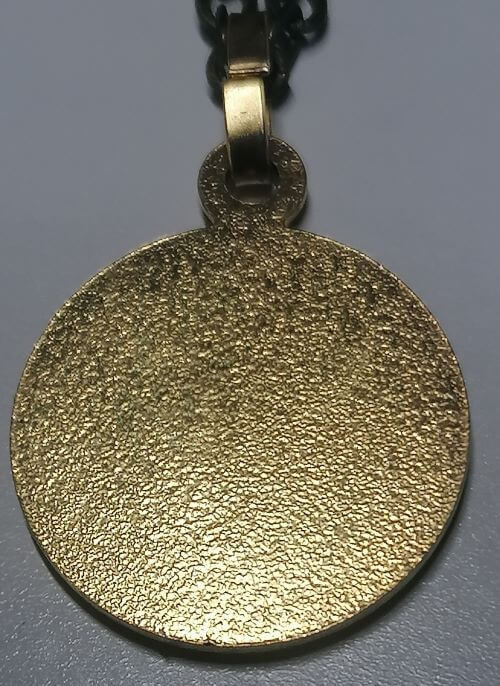

sainte-marie.ch
Le scapulaire du sacré cœur de Jésus

Sommaire
- Qu'est ce qu'un scapulaire ?
- Qu'est ce que ce scapulaire me confère ?
- Comment se faire imposer ce scapulaire ?
- A quoi s'engage-t-on en se le faisant imposer ?
- Comment obtenir ce scapulaire ?
- La médaille-scapulaire
- Quand peut-on l'enlever ?
Les informations précises sur ce scapulaire sont disponibles dans son livret (publié
en 1901).
Ainsi que dans le livre "Instructions sur les indulgences et confréries" (publié en 1832) (voir p. 293).
Qu'est ce qu'un scapulaire ?
Ci-dessus, le scapulaire du sacré-cœur de Jésus. Sur la seconde image, c'est Marie (Notre-Dame de
Pellevoisin) qui le porte.
Il s'agit ainsi d'un vêtement (et pas d'un collier), qui doit être béni et imposé par un prêtre ou
un diacre, sous des prières propres à chaque scapulaire.
On utilise le verbe "imposer" quand on parle de consacrer un scapulaire à un fidèle,
bien que c'est le fidèle qui demandera à se le faire consacrer.
Ce scapulaire est une dévotion qui permet de s'unir intimement, par le cœur Immaculé de Marie, Mère
de Miséricorde, au cœur de Jésus qui a été transpercé à la croix.
Qu'est ce que ce scapulaire me confère ?
Tout d'abord, des indulgences (approuvées par le Pape Leon XIII). Pour être plus précis :
- Indulgences de dix ans et dix quarantaines ;
- Tous les jours de Carême
- Tous les dimanches de l'Avant
- Tous les jours des Quatres-Temps
- Indulgences de sept ans et de sept quarantaines
chaque jour de la neuvaine qui précède la fête du sacré-cœur de Jésus
Mais il s'agit surtout d'un engagement envers le cœur de Jésus, par le biais de prières et dévotions
à Marie.
Comment se faire imposer ce scapulaire ?
Avant Vatican II, il fallait passer par un prêtre de la confrérie.
Mais depuis, n'importe quel prêtre ou diacre peut faire imposer le scapulaire à n'importe quel fidèle.
Parlez-en à n'importe quel prêtre ou diacre, il s'aura ce qu'est un scapulaire.
A quoi s'engage-t-on en se le faisant imposer ?
Sur le papier, il n'y a aucune autre obligation que celle de porter le scapulaire (p. 5).
Pour toucher les indulgences, par-contre, il faudra prier la Vierge Marie encore et encore.
Se lier d'amour envers elle, y développer une dévotion.
De plus, il faudra se confesser et communier le jour auquel est attachée chaque indulgence plénière,
à moins qu'on ait l'habitude de se confesser tous les huit jours.
Quand peut-on l'enlever ?
"Il est nécessaire que les deux morceaux
d'étoffe soient séparés et pendent,
l'un sur
la poitrine et l'autre sur le dos ; qu'on le
porte toujours, nuit et jour,
sans cela on ne
pourrait gagner les indulgences." (p. 5-6)
Tel que strictement décrit dans le livret, on ne peut jamais s'en séparer.
Même pas sous la douche ou pour aller se baigner (contrairement à ce que beaucoup peuvent dire).
Pour ne pas l'abîmer et passer du temps à le secher,
Pie XII et Jean-Paul II
en avaient un second plastifié et résistant à l'eau. (Ils portaient
le scapulaire N-D du mont carmel).
On notera que pour que le port ne soit pas interrompu, il faut d'abord
mettre sur soi le second
scapulaire
et uniquement ensuite enlever le premier.
Certains diront qu'il faut le porter "comme un vêtement" et que conséquemment il peut être porté
quand on le souhaite, de jour comme de nuit. Mais à nouveau, ça n'est pas ce qui est décrit
dans son livret !
D'autres diront qu'il doit être porté "moralement", jour comme nuit, mais
qu'il peut être enlevé durant la douche (sans doute car il s'abimera et qu'il faudra du temps
pour le sécher). Moralement, on peut en acheter un second et le faire plastifier.
"Moralement" on peut aussi le remplacer par la médaille-scapulaire, par exemple quand on est
sous la douche. (Voir le titre ci-dessous.) Cet argument n'est ainsi tout simplement pas valide !
La médaille-scapulaire
Le pape St Pie X a concédé la faculté de remplacer l'étoffe par une médaille scapulaire.
Cela prinicpalement car l'étoffe peut rapidement s'abimer (notemment si l'on vit dans des pays
ou il fait chaud).
La médaille-scapulaire a été autorisée dans le décret "Cum Sacra" de Pie X au 16 décembre 1910.
Bien que la médaille soit autorisée, le saint-siège recommande fortement de porter le scapulaire sous
forme d'étoffes, tel que la vierge Marie l'a demandée.
Le recto de cette médaille doit porter l'effigie de Notre Seigneur Jésus-Christ montrant son
Coeur très Sacré et le verso une image de la Bienheureuse Vierge Marie.
La médaille ci-dessous, par exemple, est une médaille valide:

Celle-ci par contre, bien que présentée sous le nom de médaille-scapulaire, ne l'est pas :
Comment obtenir ce scapulaire ?
En l'achetant en ligne (Ex:
Parvis.ch) ou en se rendant directement au sanctuaire N-D de Pellevoisin.
Pour ce qui en est de la médaille-scapulaire, vérifiez bien avant de l'acheter que les 2 faces
soient conformes aux exigences !